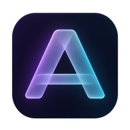
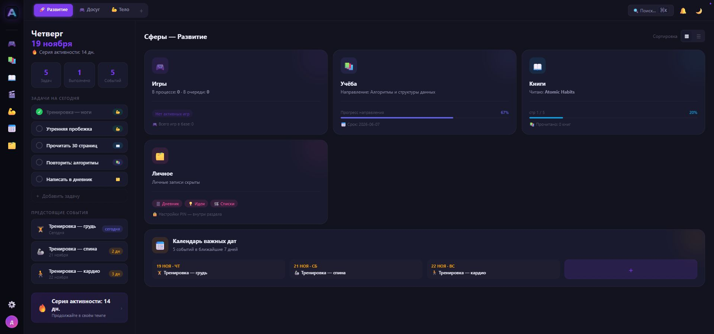
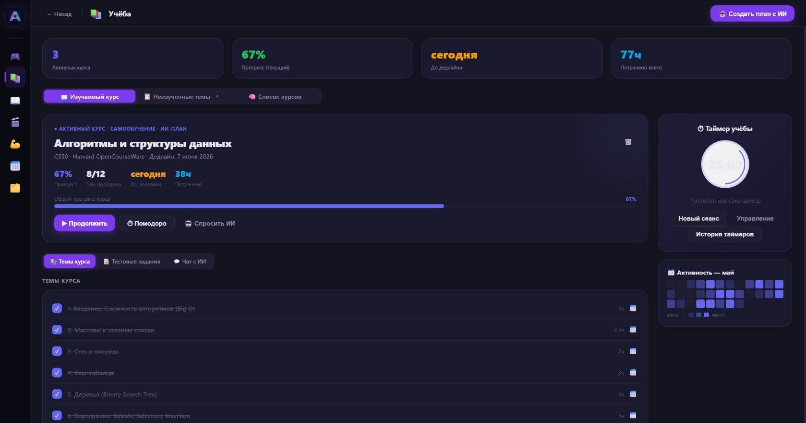

Начните с сегодня
Соберите задачи на день, отмечайте выполненное и держите ближайшие события перед глазами.

AetherЛичное пространствоЗадачи, учебные планы, книги и личные записи — в одном приложении для Windows.
Посмотреть в работе Реальные экраны · без установки
ДЛЯ ВАШЕГО РИТМА
Для тех, кто учится самостоятельно, ведёт личные проекты
и хочет оставлять место для отдыха.
Соберите задачи на день, отмечайте выполненное и держите ближайшие события перед глазами.
Разбивайте учебный курс на темы и следите за прогрессом. В библиотеке храните книги и отмечайте прочитанное.
Записывайте идеи и мысли в дневник, ведите списки игр и фильмов, к которым хочется вернуться.
Поиск в каталогах книг, фильмов и игр в этой бете требует персонального кода доступа.
СЦЕНАРИЙ: ПОЛЧАСА НА УЧЁБУ
В обзоре дня есть задача «Повторить: алгоритмы».
Откройте курс и выберите, что изучать дальше.

Это реальные экраны beta.17 со встроенными примерами, снятые в браузерном режиме. Переключатель показывает скриншоты, а не запускает приложение.
ПРЕДВАРИТЕЛЬНЫЙ ВЫПУСК
Стабильного публичного выпуска пока нет. Доступна тестовая версия для Windows x64. Познакомьтесь с интерфейсом выше или изучите условия беты перед установкой.
Открыть выпуск на GitHubWindows x64 · EXE · 12,52 МиБ
Каталоги работают в закрытой бете: нужен персональный код. Скачивание не предоставляет код доступа.
Сертификата издателя Windows пока нет, поэтому возможно системное предупреждение.
Публичный файл и SHA-256 проверены 22.11.2026.
9e840e8cecbd864adbf5c98d4ec49985c6335886299ab28fba2361ed5dbc00c0Список контрольных сумм выпуска ↗Для запуска нужны Windows x64 и Microsoft Edge WebView2 Runtime. Результаты проверки установки и известные ограничения указаны в примечаниях выбранного выпуска. Этот установщик предназначен для x64; поддержка ARM64 не заявлена.
Персональный код открывает доступ к управляемым каталогам книг, фильмов и игр. Публичный установщик не означает открытый набор тестеров. Запросить код можно через личные сообщения канала Aether в Telegram.
В Windows-приложении данные профиля хранятся локально, отдельно от папки программы. Для поиска по внешним каталогам и других сетевых интеграций нужен интернет. Этот сайт показывает только демонстрационные скриншоты и не подключается к вашему профилю.
НАЧНИТЕ С ОДНОГО ШАГА
Посмотрите короткий пример работы Aether или узнайте об условиях тестовой версии для Windows.